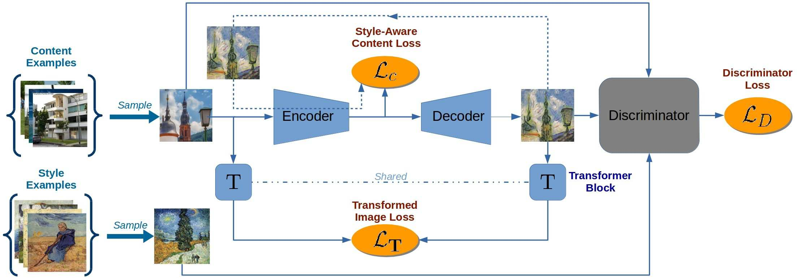

Artsiom Sanakoyeu*, Dmytro Kotovenko*, Sabine Lang, Björn Ommer, In ECCV 2018 (Oral)
Result

Approach

- Discriminator Loss
- To train
E andG we employ a standard adversarial discriminatorD to
distinguish the stylized outputG(E(xi)) from real examplesyj∈Y ,Discriminator Loss
D(E,G,D)=𝔼y∼pY(y)[logD(y)]+𝔼x∼pX(x)[log(1−D(G(E(x))))]
- To train
- Style-Aware Content Loss
- The details that need to be retained or ignored in
z (z =E(x) ) depend on the style. -> Style-Aware - So, a pre-trained network or fixed similarity measure for measring the similarity in content between
xi andyi is violating the art historical premise that the manner, in which content is preserved, depends on the style. - Therefore, when measuring the similarity in content between input image
xi and the stylized imageyi=G(E(xi)) in the latent space, we focus only on those details which are relevant for the style.Style-Aware Content Loss
c(E,G)=𝔼x∼pX(x)[1d‖E(x)−E(G(E(x)))‖22]
Let the latent space haved dimensions.
- The details that need to be retained or ignored in
- Transformed Image Loss
- Computing the difference between
xi andyi in RGB space would impose a high penaly for any changes in image strcture between inputxi and outputyi , because it relies only on low-level pixel information.It is untrainable - We aim to learn image stylization and want the encoder to discard certain details in the content depending on style.
It should be trainable - So weak image transformationon
xi andyi , which is learned while learningE andG .T is a transformer block which is essentially a one-layer fully convolutional neural network taking an image as input and producing a transformed image of the same size.Transformed Image Loss
T(E,G)=𝔼x∼pX(x)[1CHW‖T(x)−T(G(E(x)))‖22]
- Computing the difference between
Full Objective model
(E,G,D)=c(E,G)+t(E,G)+λ(E,G,D)
Optimization
E,G=argminE,GmaxD(E,G,D)
Conclusions
1.Model that enables sets of style images
2.Preserve content in style specific manner ➜ Style-aware content loss
3.Fast HD video style transfer w/o temporal smoothing Wait to read
4.New metric for quantitative evaluation of style transfer Wait to read